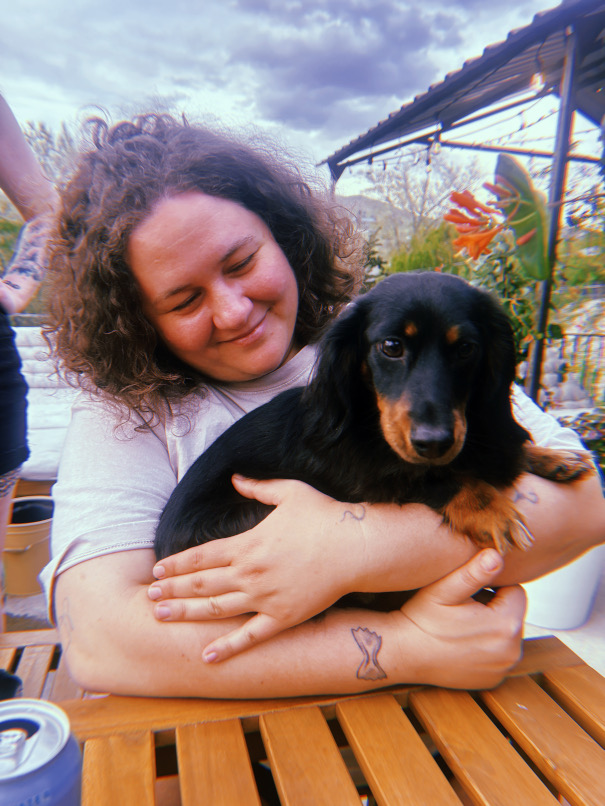

Ariel "Ari" E. Rosenfield (she/her)
email: npǝ˙pɯn@ᴉɹɐᴉɹɐ

Hi! I'm a postdoctoral fellow in the MathQuantum RTG at University of Maryland, College Park. Currently, I spend a lot of my mathematical life thinking about enriched categories, universal algebra, and category-theoretic techniques in quantum information science. I like problems involving 'mathematical analogies,' where one kind of structure shows up in many different contexts, and problems that I can draw pictures or diagrams of.
Before I was a mathematician, I worked as: A rural mail carrier, a fish sorter in a salmon cannery, a server at a sandwich shop, a nightclub bathroom attendant, the person who runs the balloon pop game at Pacific Park, a telemarketer, and a street accordionist.
~*~*~
proudly a member of Jewish Voice for Peace